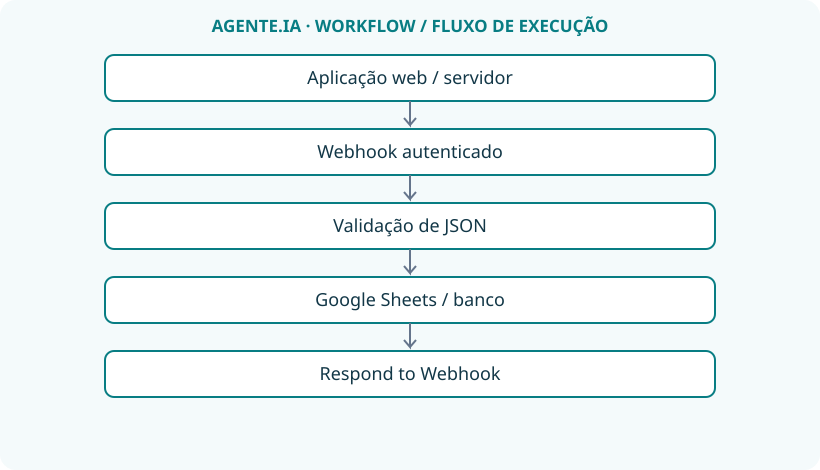

Lab 05 — Aplicação web + Webhook + Sheets
Usar n8n como backend de integração de uma aplicação web, sem expor credenciais no navegador.
Objetivo
Usar n8n como backend de integração de uma aplicação web, sem expor credenciais no navegador.
Pré-requisitos: acesso autorizado ao servidor n8n, workflow privado de teste e dados sintéticos. As integrações externas requerem credenciais próprias e autorização administrativa; não altere a instância compartilhada.
Arquitetura

Arquivos e simulação
Workflow JSON importável (simulação) · Entrada JSON · Regra JavaScript · Catálogo CSV · Estoque CSV · Frequência CSV · Fontes sintéticas · Contrato de skill · Casos de teste da coleção · Script de testes locais · Guia de execução
Importe o JSON pelo menu do editor, execute manualmente e examine a saída do último nó. Este arquivo executa somente uma regra de demonstração com dados fictícios. Ele não envia mensagens, não acessa serviços e não contém credenciais. As etapas seguintes são a implementação real guiada.
{
"id": "REQ-01",
"curso": "C001"
}function avaliar(p){return {status:typeof p.id==='string'&&/^REQ-[0-9]+$/.test(p.id)&&/^C[0-9]{3}$/.test(p.curso||'')?'ok':'invalido',id:p.id};}
Implementação real passo a passo
- Importe webhook.json. O endpoint de demonstração inicia desativado; configure Header Auth no próprio nó (segredo de teste) antes de ouvir ou publicar.
- No Webhook, método POST, use URL de teste quando estiver ouvindo; depois publique/ative conforme versão para usar URL de produção. Nunca exponha editor ou segredo no frontend.
- Envie JSON de exemplo via curl a partir de terminal autorizado. Use o nó Code para validar curso e retornar status; configure Respond to Webhook para JSON e código HTTP conforme o resultado.
- Após testar, conecte Google Sheets Append or Update Row a um ramo válido; use id de requisição persistente e campo curso. Para consultas privadas, use seu backend autenticado antes de chamar n8n.
- Use exemplo de formulário web fornecido como demonstração de interface; conecte a rota /api/solicitacoes de um backend próprio, não diretamente a um webhook com segredo embutido.
Workflow Webhook autenticado — modelo · Frontend ilustrativo
curl -X POST 'https://SEU-SERVIDOR/webhook-test/agenteia-lab05-ALTERE' -H 'Content-Type: application/json' -H 'X-Lab-Key: SEU_SEGREDO_DE_TESTE' -d '{"id":"REQ-01","curso":"C001"}'Aplicação web executável no computador do estudante
Baixe app.py e web.html na mesma pasta. Execute python app.py e abra http://127.0.0.1:8765/. Sem variáveis de ambiente, o backend simula a resposta; com N8N_WEBHOOK_URL e N8N_LAB_KEY, ele chama o webhook HTTPS autorizado. No nó Webhook do n8n, configure a credencial Header Auth com o nome X-Lab-Key e o mesmo valor. Escolha uma rota única por aluno e utilize a URL copiada do editor (não invente o caminho). Defina o segredo fora do código, conforme orientação do administrador. Não exponha este backend didático fora da máquina local: não possui autenticação de usuários para produção.
python app.pyTeste REQ-01/C001 (válido), REQ-01/XYZ (inválido), depois configure o endpoint e verifique o campo modo da resposta. A versão Webhook inicial valida solicitações; adicione o registro na planilha pelo roteiro antes de considerar concluída a integração.
Configuração dos nós no editor
O navegador chama backend autenticado, que chama n8n. Não colocar segredo em HTML. Utilize webhook.json existente e formulário demonstrativo.
| Nó | Parâmetros e mapeamento | Saída esperada |
|---|---|---|
| Webhook | POST; Header Auth; Respond to Webhook | body.id e body.curso |
| Code / IF | Validar schema, comprimento e identidade do backend | status de entrada |
| Google Sheets | Append or Update Row; match id | Registro válido |
| Respond to Webhook | JSON; 200/400/403 conforme política | Resposta ao backend |
Execução e evidências
- Duplique o fluxo de simulação; monte os nós na ordem do diagrama e da tabela. Guarde credenciais no editor, não no código.
- Execute os nós individualmente, confira o JSON de entrada e saída e depois execute o fluxo completo em ambiente de teste.
- Registre em tabela entrada, resultado esperado, observado, duração, versão e evidência. Desative o fluxo e revogue credenciais de teste ao concluir.
| Caso de teste | Critério de aceitação |
|---|---|
| REQ-01/C001 | 200 e registro |
| curso inválido | 400, sem gravação |
| credencial inválida | rejeição antes de workflow |
Roteiro ampliado V218 — Webhooks e APIs
Do endpoint simulado à integração institucional. Os arquivos de estoque são adicionais ao exercício original de cursos.
Workflow de estoque importável · Testes do Code node · Idempotência SQLite

05A — Importar e configurar
Importe webhook-estoque.json; altere path para incluir seu identificador; configure Header Auth com nome X-Lab-Key e valor privado; não publique ainda.
05B — Testar HTTP
Copie Test URL, acione Listen for Test Event, execute cURL ou Postman; repita a escuta em cada teste. Observe status e corpo.
05C — Integrar Sheets
Crie aba estoque com codigo,nome,estoque,preco; insira P001 e P002. Separe validação do Code, use IF para impedir consulta inválida; no ramo válido use Google Sheets Get Row(s), filtro codigo igual ao campo produto validado, Always Output Data se necessário. Formate resultado: zero linhas = 404; uma = 200; mais de uma = 409. Não interprete erro de acesso como ausência. Conecte todos os ramos a Respond to Webhook.
05D — Interface web
Execute python app.py no diretório do laboratório e abra http://127.0.0.1:8765. A interface existente usa o contrato de solicitação de cursos (id,curso), não o de estoque; adapte somente após entender os dois contratos.
05E — Backend
Use o webhook.json original para integrar app.py; defina N8N_WEBHOOK_URL e N8N_LAB_KEY no terminal. O app envia X-Lab-Key via HTTPS e nunca o expõe no navegador. Para estoque, crie rota distinta e mapeie produto; não envie o contrato antigo ao endpoint novo.
05F — Autorização
Teste credencial ausente e incorreta; no serviço de estoque use somente leitura. Identidade do cliente final deve vir do backend autenticado; não aceite role do corpo.
05G — Erros e duplicatas
Rode python idempotencia.py. Demonstração registra evento uma vez em SQLite e retorna conflito se o mesmo ID tiver outro conteúdo. Consulta de estoque é leitura; não exige registro de evento. Para escrita real, use transação e outbox para efeitos externos.
05H — Produção
Com autorização do administrador, publique o workflow e teste Production URL. Verifique HTTPS, rede, logs e limites. Desative após a prática.
05I — Agentes externos
Configure ferramenta HTTP de um agente de teste com esquema de entrada produto; credencial fica no backend. Permita apenas a operação de leitura. Compare resposta com cURL.
05J — Comparar MCP
Repita o serviço como ferramenta MCP usando o Lab 09; compare descoberta de ferramentas, contratos, autorização e latência. Não exponha todos os workflows.
node test-webhook.js
python idempotencia.py
# Após definir LAB_URL e N8N_LAB_KEY no terminal:
curl -i -X POST "$LAB_URL" -H "Content-Type: application/json" -H "X-Lab-Key: $N8N_LAB_KEY" -d '{"produto":"P001"}'| Caso | Esperado |
|---|---|
| P001 | 200; estoque 8 |
| P002 | 200; estoque 0 |
| P999 | 404 |
| P1 ou campo adicional | 400 |
| Sem credencial | Rejeição antes do Code |
| Falha Sheets | Erro controlado; não confirmar estoque |
| Evento repetido | Nenhuma nova escrita |
| Mesmo ID, outro payload | 409 |
| Limite excedido | 429 no proxy/backend |
Entregáveis: exportação sem segredos, diagrama, captura de cada status, registro de latência, evidência de autorização e comparação MCP. Diferencie teste local de teste real.
Conceitos: HTTP · JSON · API REST · Postman · cURL · Rate limiting · Tutorial
Testes e avaliação
| Entrada / cenário | Resultado esperado |
|---|---|
| id e curso válidos | 200 / ok |
| campo ausente | 400 / invalido |
| sem credencial | 401/403, conforme configuração |
| id duplicado | validar deduplicação na persistência |
Diagnóstico: erro de autenticação → confira credencial e escopo; erro de conectividade → solicite ao administrador verificação de DNS/TLS/rede; erro de mapeamento → inspecione o JSON do nó anterior; quota → interrompa e replaneje. Não tente contornar políticas do serviço.
Entregáveis: export JSON sem credenciais, desenho do fluxo, evidências de pelo menos três testes, registro de falhas, avaliação de risco e explicação de quando não usar IA. Rubrica: configuração 2, funcionamento 3, testes 2, segurança 2, reflexão 1.